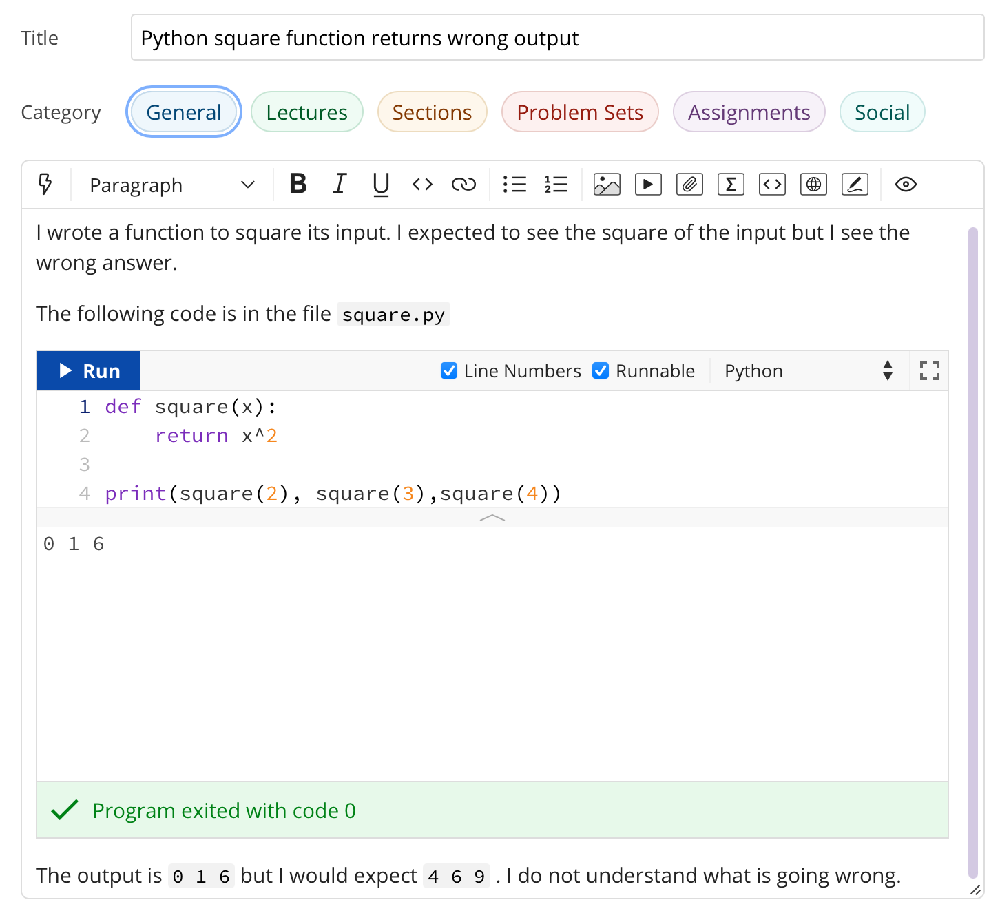

1. Getting help¶
It is very likely that you will at some point find a programming problem you can’t solve, or will find what you believe to be a bug in a piece of software you rely on. In these circumstances, you need to be able to ask for help, in writing, in some sort of online forum. There is a skill to doing this, and doing it well will help others to help you - which radically increases the chance that you will quickly get a solution to your problem. Such a request for help is called an issue report. It’s sometimes also called a bug report, but that’s not always a very accurate description: when you experience trouble with a piece of software then you have an issue, the issue may or may not be the result of a bug in the software.
1.1. Writing an issue report¶
The following sections explain the content that should (and sometimes shouldn’t) be in every issue report. You should get into the habit of thinking through all of these stages every time you raise an issue. If the issue report is short then there is no need to explicitly highlight each of these stages, so long as the information is there. For a longer or more complex issue, it can make the issue easier to read if you actually include these steps as subheadings.
1.2. Title¶
The title of the issue, which might go in the subject line of an email or a forum post, should be a very short (10 word) outline of the key problem you observe. Examples might include:
Command not found when starting Python
Inverting matrix results in FloatingPointError
Incorrect values from MyClass.somemethod() for complex inputs
What these titles have in common is that they (very briefly) contain both what the user was doing, and what went wrong. This is enough for someone reading the title to have a picture of what sort of thing the user was doing, and what seems to have gone wrong.
Notice that the titles do not need to be full sentences (there are no verbs in any of them), but they are precise about what the user was doing, naming the exact operation and error observed.
1.3. Steps to reproduce¶
Next, it’s very important to establish exactly what has happened. This is essential both for the understanding of the people trying to help, and to enable them to recreate the problem themselves. It doesn’t need to be particularly long, but it does need to be complete, in the sense that someone else reading your description have enough information to know what you did and (all else being equal), hit the same problem. The steps to reproduce can themselves be divided into categories:
- relevant system information
The key word here is “relevant”. For example if you’re having trouble running Python itself, then which Python you installed on which operating system is very relevant. On the other hand if Python is running just fine but you’re hitting an exception that you don’t understand, then it probably doesn’t matter which operating system you are running.
- which code failed
Were you working on a particular exercise, which one? How would the helper find your code? If it’s code that you have edited, then unless you have committed and pushed the changes, there is no way for a helper to get access to the code you actually ran, so they will be flying blind. Avoid attaching large amounts of code to issues, it’s difficult for helpers to work with, or even to run in exactly the same way you did. It’s much better to be able to point to a complete repository. Of course an even better approach is to construct a minimal failing example.
- what did you actually do?
This is one point where running code from the terminal is a major advantage, because you can simply copy and paste everything you typed into the issue. Explaining precisely what you did with a graphical interface is much harder, and requires particular attention to detail. Remember that the person reading your issue report can’t see what you can see, so if you skip over steps then they might not even be able to see the thing you say you clicked on!
It’s important that the description of what you did is strictly a factual historical record. This is not the time to speculate about what you think is going wrong, we’ll get to that bit. Here you’re strictly repeating what you did.
Note
Please avoid posting substantially complete solutions to programming exercises into a forum as this simply detracts from the learning experience of others. The best thing to do is to reduce your issue to a minimal failing example and post that. If that’s not possible and you’re posting an issue as a part of a formal course with instructors, then ensure that you have pushed your work to Github (Section 2.6.5), and then post the git commit hash (Section 2.6.6). This will enable the instructor to find your code. It is still important to include all of the other components of the issue report.
1.4. Observed result¶
The next stage is to describe what happened. Again, this is strictly a reporting stage. You report your observations and only those. If there is textual output, then include all of it. It’s a very common failing for issue reports to only contain the part of the output that the reporter thought was relevant, omitting a whole load of essential information whose importance the reporter did not realise.
If the problem is in the visual appearance of a graphical output, for example a graph with invalid layout, then it would be appropriate to attach an image.
1.5. Expected result¶
This is the first point at which you are no longer simply a reporter of observed facts. Sometimes the expected result is completely obvious: you observed an error and you expected that the code would run correctly. However in other circumstances there might not be an error but the result might not be what you expect. Regardless of which of these is the case, you should include some sort of statement of what you were expecting to have happen. This is for two reasons, the first is that the mere fact of stating the question like this forces you to think about what the core question you are asking is. This will help you write a focussed issue report which is easier for your helpers to respond to. The second is that a statement of what you think that the outcome should be can help someone reading the issue report to understand the question you are asking, and therefore that they should answer.
1.6. Any other information¶
Finally, you should add any other information you think is relevant. For example if you think you have an idea about what is going on, then put it in here. Alternatively if you’ve searched for the error online and think you’ve found relevant information then include this here.
1.7. Issue pitfalls¶
Many issue reports suffer from a few common failings. A lot of these come down to not providing enough or precise enough information for those who might help to actually do so. Always remember that the people you are asking for help haven’t seen what’s on your screen, and don’t know what have done. You therefore need to spell things out for them in quite exacting detail.
1.7.1. Be precise¶
Rather than just say that you got an error, state exactly which type or, if you don’t know, then repeat exactly what was printed out. Exactly which tool were you using? Did a Python error occur in a particular script, or was it the result of something you typed into the Python command line?
1.7.2. Don’t leap to conclusions¶
Very often you will have an idea about what has gone wrong. This is important information, and you should include it in your issue report, however don’t let it distract you from providing a precise and complete description of what happened. If you’ve not been able to fix the issue yourself, then you can’t exclude the possibility that you might not understand what it is that has gone wrong. For this reason, you should always include everything you did and the entirety of any error message, even if you don’t think it’s relevant to the error.
1.7.3. Avoid “it”¶
“It doesn’t work” is every software developer’s least favourite issue report. When describing the programs and data that you are using, you have a mental model of what you are working with. The reader of your issue does not share this model, so when you use pronouns such as “it” then the reader frequently has no idea what “it” is that you are referring to. If you know which program failed, then name the program explicitly. If you don’t then simply but precisely describe what you observed.
1.7.4. Avoid screenshots of text¶
If the input and/or output of the operation which caused the issue are text, then copy and paste that text into the issue. Do not insert a screenshot. There are many reasons why screenshots are inferior to copying and pasting the text:
You don’t know what screen the reader will be on. Screenshots can very easily end up very hard to read.
The reader can’t search the text in a screenshot for particular words or phrases they need to find to diagnose your error.
The reader may well want to copy exactly what you typed in order to try to reproduce the error. They can’t do that from a screenshot.
It is very easy for a screenshot to miss important information. For example many error messages are quite long, and part of the error may well have scrolled out of view.
The only time when it is appropriate to include a screenshot is when the output is graphical and you need to illustrate why something looks wrong.
1.8. An example issue report¶
This section shows a small example issue written on the forum system that Imperial College London uses for its classes. The details of how to achieve the right formatting will differ from forum to forum, but the principles are the same. Importantly, most forum systems are optimised for making text easy to read and will quite happily destroy the meaning of your code by moving the line breaks to make the text fit the window. It’s therefore important that code is correctly formatted as code rather than as text. On this forum, this is achieved using the <> icons. The plain icon is for inline code while the boxed version is for code blocks. In this particular forum software, a self-contained minimal failing example can be run directly in the browser, providing additional information to helpers.
